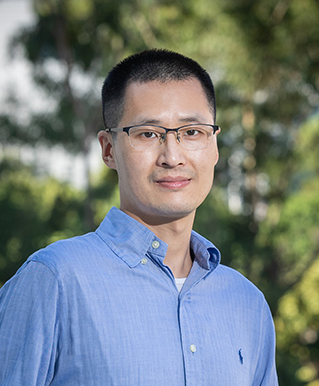
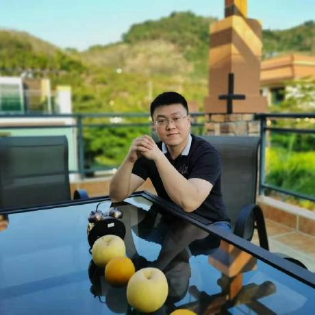
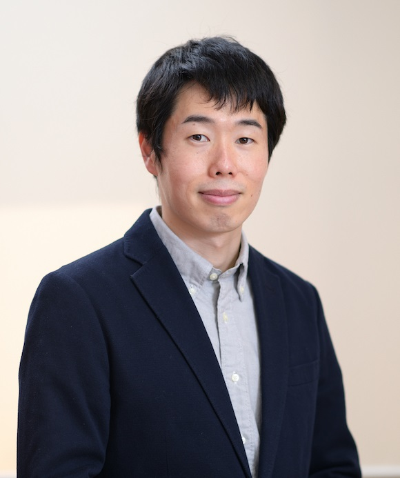
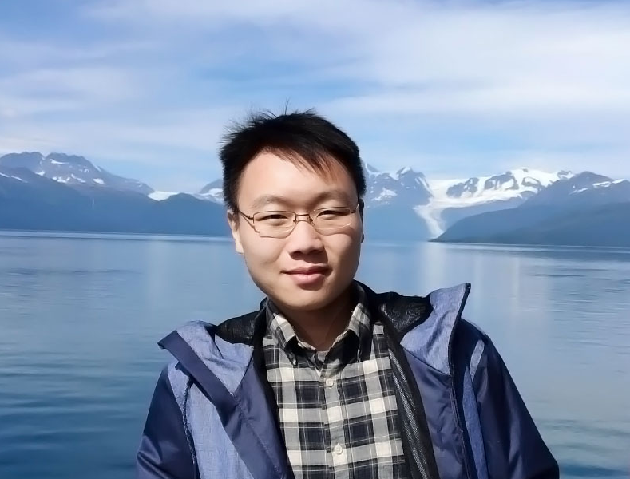

Advisory Board
Prof. Masashi Sugiyama (RIKEN-AIP/The University of Tokyo)

Dr. Gang Niu (RIKEN-AIP)

Dr. Bo Han (HKBU)
Dr. Tongliang Liu (USYD)
Executive Group

Jingfeng Zhang (Fudan University/RIKEN-AIP)

Feng Liu (The University of Melbourne/RIKEN-AIP)

Takashi Ishida (The University of Tokyo)
Okan Koc (RIKEN AIP)
Shuo Chen (Nanjing University/RIKEN AIP)
